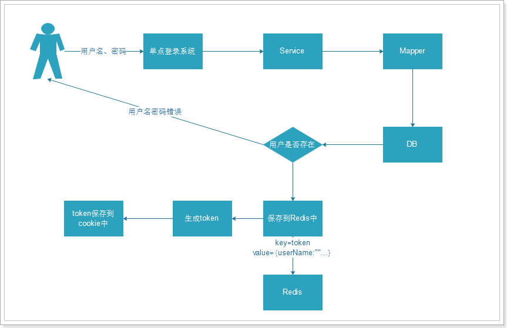

package com.blog.sso.controller;
...省略import代码
@RequestMapping("user")
@Controller
public class UserController {
//登录成功跳转页面
private static final String INDEX_PAGE = "http://www.blog.com/index.html";
//cookie键名称
private static final String COOKIE_NAME = "LifeSharing_User_Token";
@Autowired
UserService userService;
...省略页面跳转相关代码
...省略注册action
/*登录action*/
@RequestMapping(value = "doLogin", method = RequestMethod.POST)
public String doLogin(@RequestParam("userEmail") String userEmail,
@RequestParam("userPwd") String userPwd,
HttpServletRequest request,
HttpServletResponse response) {
if (StringUtil.isEmpty(userEmail) || StringUtil.isEmpty(userPwd)) {
request.setAttribute("userEmail", userEmail);
request.setAttribute("loginMsg", "请输入正确的用户名及密码");
return "login";
} else {
//组装用户数据验证数据合法性
User user = User.builder().userEmail(userEmail).userPwd(userPwd).build();
//获取登录成功后的Token
String token = null;
try {
token = userService.isUserLogin(user);
} catch (Exception e) {
e.printStackTrace();
}
if (null != token) {
//查询到用户所有数据
User userInfo = this.userService.queryUserByUseremail(userEmail);
//被拉黑无法登陆
if (1 == userInfo.getIsBanned()) {
request.setAttribute("loginMsg", "您已被拉黑，请联系管理员");
return "login";
}
//登录成功，保存token到cookie中
CookieUtils.setCookie(request, response, COOKIE_NAME, token);
//request.getSession().setAttribute("user", userInfo);
return "redirect:" + INDEX_PAGE;
} else {
//数据回显
request.setAttribute("userEmail", userEmail);
request.setAttribute("loginMsg", "用户名或密码错误");
return "login";
}
}
}
}
String token = DigestUtils.md5Hex(user.getUserEmail() + System.currentTimeMillis());
redisService.set("TOKEN_" + token, MAPPER.writeValueAsString(userInfo), REDIS_TIME);
CookieUtils.setCookie(request, response, COOKIE_NAME, token);
================================================================
/**
* 设置Cookie的值，并使其在指定时间内生效
*
* @param cookieMaxage cookie生效的最大秒数
*/
private static final void doSetCookie(HttpServletRequest request, HttpServletResponse response,
String cookieName, String cookieValue, int cookieMaxage, boolean isEncode) {
try {
if (cookieValue == null) {
cookieValue = "";
} else if (isEncode) {
cookieValue = URLEncoder.encode(cookieValue, "utf-8");
}
Cookie cookie = new Cookie(cookieName, cookieValue);
if (cookieMaxage > 0)
cookie.setMaxAge(cookieMaxage);
if (null != request)// 设置域名的cookie
cookie.setDomain(getDomainName(request));
cookie.setPath("/");
response.addCookie(cookie);
} catch (Exception e) {
logger.error("Cookie Encode Error.", e);
}
}

ssoUserQueryService.queryUserByToken(USER_TOKEN).toString())
@Service
public class SSOUserQueryServiceImpl implements ISSOUserQueryService {
private static final Logger LOGGER = Logger.getLogger(SSOUserQueryServiceImpl.class);
//Jackson映射类
private static final ObjectMapper MAPPER = new ObjectMapper();
//会话超时时间
private static final Integer REDIS_TIME = 60 * 30;
@Autowired
private RedisService redisService;
//通过用户token查询用户信息
@Override
public User queryUserByToken(String token) {
//1.通过Token的key取得序列化用户信息
String userJsonData = redisService.get(token);
LOGGER.info(token);
if (StringUtils.isEmpty(userJsonData)) {
//登录超时
return null;
}
//2.重设Redis生存时间
this.redisService.expire(token, REDIS_TIME);
//3.反序列化Json为对象
try {
User userFromJson = MAPPER.readValue(userJsonData, User.class);
return userFromJson;
} catch (Exception e) {
e.printStackTrace();
}
return null;
}
}
@RequestMapping(value = "index", method = RequestMethod.GET)
public String toLogin(
@CookieValue(value = "LifeSharing_User_Token") String LS_User_Token ,
HttpServletRequest request,
HttpSession session) throws Exception {
/*
* 获取cookie中的值
* 先判断Redis中是否有用户信息
* @CookieValue 通过设置key取得对应的cookie值
*/
USER_TOKEN = "TOKEN_" + LS_User_Token;
//未登录访问主页或者退出后访问均重定向到登录页
if (StringUtils.isEmpty(LS_User_Token) || (null == redisService.get(USER_TOKEN))) {
return "redirect:" + LOGIN_PAGE;
} else {
//1.通过Token的key取得序列化用户信息
String userInfoJsonSerializable = redisService.get(USER_TOKEN);
//2.反序列化Json为对象
User userFromJson = ssoUserQueryService.queryUserByToken(USER_TOKEN);
//将该用户设置到Session
session.setAttribute("user", userFromJson);
//从序列化后的对象中取得用户的ID
Integer userID = userFromJson.getU_id();
//页面加入数据再返回
Map<String, Object> indexDataMap = blogService.getIndexDataMap(userID);
List<GuanzhuQueryVO> guanzhuQueryVOs = (List<GuanzhuQueryVO>)indexDataMap.get("guanzhuList");
//TODO 删掉此处日志并将数据传到前台
LOGGER.info(guanzhuQueryVOs.toString());
@SuppressWarnings("unchecked")
//博客列表数据
List<BlogQueryVO> blogs = (List<BlogQueryVO>) indexDataMap.get("bloglist");
request.setAttribute("bloglist", blogs);
return "index";
}


@RequestMapping(value = "logout", method = RequestMethod.GET)
public String adminLogout(HttpServletRequest request) {
if (null != request.getSession()) {
//移除会话信息
request.getSession().removeAttribute("user");
//移除Redis中用户信息
redisService.del(USER_TOKEN);
}
return "redirect:" + LOGIN_PAGE;
}